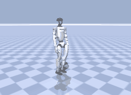
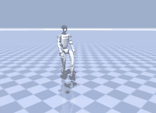
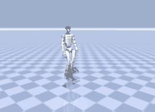
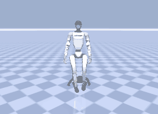
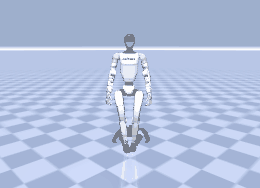
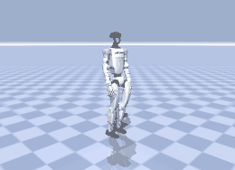

Hindi-Conditioned Whole-Body Motion for a Humanoid
A frozen multilingual encoder and a frozen motion diffusion model, joined by one small trainable adapter. Devanagari goes in, whole-body
motion for a Unitree G1 comes out, with no translation step anywhere in the inference path.
Every number on this page is measured. Two models produced them. Sections 01, 03, 05 and 06 come from the MAILA run:
frozen MuRIL → a 4.7M residual adapter (α 0.13075) → frozen OMG-DiT 100m sstep=170000.ckpt, trained 25,000 steps and
selected at 22,000 on text sensitivity; benchmarks are n=1,024 against a frozen evaluator. Sections 02 and 04 — the rollout search tree
and the selected trajectory — were generated by a different, smaller model, our OMG-DiT-B (step 55,000), because the MAILA base
checkpoint is not available locally to re-run the search. Both are real generation; they are not the same generator, and the page never
averages across them. Two caveats up front: the Hindi adapter reaches R@1 0.502 but still trails MT-pivot at 0.535, and this dataset's
yaw sign does not map onto the English words "left" and "right", so headings are reported as signed degrees.
Language instruction y
“एक रोबोट आगे चलता है और फिर बायीं ओर मुड़ जाता है।”
“a Robot walks forward then turns to the left.” · clip 006701, held-out val split
K = 5noise seeds per node
H = 5chunks · 10.0 s horizon
105rollouts generated
3,905exhaustive tree

d=1 · 2.0 s0.51 m forward
→

d=2 · 2.0 s0.88 m forward
→

d=3 · 2.0 s0.88 m forward, turns -35°
→

d=4 · 2.0 sholds position
→

d=5 · 2.0 sholds position
01 · Conditioning Path
From Hindi text to the frozen generator's input
One trainable module, 4.7M parameters, sitting between a frozen multilingual encoder and a frozen motion generator. Nothing else in the
stack learns.
💡 Intuition. The motion generator was trained to read t5-base, which cannot represent Devanagari at all — every Hindi word
becomes an unknown token. Rather than retrain the generator, MAILA freezes it and learns a small translator that maps MuRIL's
multilingual representation into the exact geometry t5-base produces. The generator never knows the language changed.
Hindi instructionany Indic script or romanisation
MuRIL17 Indian languages + transliterations 768-d token statesFROZEN
OMG's proj is nn.Identity(). There is no learned layer between the text encoder and cross-attention, so the
adapter's output must land in t5-base's actual geometry. A wrong-geometry encoder loads cleanly and produces confident
nonsense.
Invariant 2 · CFG must not move
The unconditional branch uses t5-base's own null context, computed once and cached as a buffer. Routing the empty string through the
adapter would silently redefine what guidance at 2.5 means.
Invariant 3 · masking is copied
has_text is applied exactly as OMG does it — mask first, then zero the context — so batches with missing captions behave
identically.
Training loss · 1,001 logged steps
Two terms: the native diffusion loss on Hindi, plus a response-matching term pulling the adapter's output toward t5's for the same
sentence. λ anneals 0.5 → 0.1 after 5,000 steps, so the teacher guides early and lets go later.
α · the residual gate
Initialised at 0.1 and free to grow. MuRIL space is not t5 space, so there is no safe identity init — α had to move for this
to work at all. It settled at 0.13075, a real but deliberately gentle correction.
Phase-1 contract checks · 13/13 pass
check
result
detail
1 context shape [B,50,768]
PASS
(4, 50, 768)
1 mask shape [B,50] bool
PASS
(4, 50) torch.bool
1 mask is a contiguous prefix
PASS
—
1 context finite
PASS
—
2 gradient reaches the adapter
PASS
9 tensors with grad
2 no gradient anywhere else
PASS
[]
3 tiny set overfits (loss drops >40%)
PASS
0.18851 -> 0.01392 (92.6% drop)
3 alpha moved off its init
PASS
0.1000 -> +0.1465
4 different prompts -> different motion
PASS
mean|dx0| = 5.157e-02
5 conditional context differs from null
PASS
mean|d| = 7.366e-01
5 null context matches cached t5 null exactly
PASS
—
6 no translator package imported
PASS
[]
6 encoder holds no t5 at inference
PASS
passthrough_t5 is off
Why these matter. Check 3 is the one that decides whether the design is viable at all: a 13-sample overfit drove the loss from
0.18851 to 0.01392, a 92.6% drop, proving gradient actually reaches the adapter and the residual framing is expressive enough. Check 5
confirms the cached null context is byte-identical to t5's, which is what keeps classifier-free guidance meaning the same thing it did
during pre-training.
02 · Multi-Step Chunk Rollout Search
History-conditioned search over generated motion chunks
Every node below is a real rollout from the trained OMG-DiT-B checkpoint (step 55,000, val MSE 0.0302), driven by one Hindi instruction
over clip 006701 of the held-out val split. A beam of width 5 generated 105 of the 3,905 rollouts the exhaustive K=5,
depth-5 tree contains. No node on this page is illustrative.
💡 Intuition. There is no motion vocabulary and no next-token distribution. The generator denoises a whole 2-second chunk at once, so
branching comes from the diffusion noise seed: the same instruction and the same 10 history frames produce different, equally valid
continuations. Each chunk's last 10 frames are re-anchored into the history of its children, which is what makes the tree deepen.
⚠ Measured limitation of this run. The beam ranks by minimum denoising residual, and on these 105 rollouts that quantity
correlates +0.45 with how far the robot actually travels: the lowest-residual fifth moves 0.46 m per chunk, the highest-residual
fifth 1.09 m. Low residual means "easy for the model to denoise", and a nearly static chunk is the easiest thing there is — so this
objective rewards standing still. It shows in the winner: τ* covers 0.53, 0.90 and 1.04 m in its first three chunks, then 0.13 and
0.09 m in its last two. Separately, mean seam discontinuity grows with depth (0.056 → 0.134 → 0.149 → 0.172 → 0.139 rad) because the history
a chunk is conditioned on is itself generated after d=1, which is what the rejections below are catching. A usable objective needs an
instruction-grounded progress term; this page shows what the residual alone selects.
∑ Formalization
cd(k) = DDIM50(εk; hd−1, y, w=2.5) ∈ ℝ60×125
hd = anchor(cd[−10:])
εk is the seed. y is one fixed Hindi instruction, identical at every node.
Search Cardinality
5 → 25 → 125 → 625 → 3125
Exhaustive: 3,905 rollouts. A width-5 beam actually generated 105 of them, in 134 s on one CPU.
search arithmetic
5d1 · cum 525d2 · cum 30125d3 · cum 155625d4 · cum 7803,125d5 · cum 3,905
Σ states = 0
τ* denoising residual
0.0013+0.0021+0.0021+0.0016+0.0013
log p = 0.000a proxy, not a likelihood
5d=1 · 2.0 s
25d=2 · 4.0 s
125d=3 · 6.0 s
625d=4 · 8.0 s
3,125d=5 · 10.0 s
60 FRAMES · 2.0 s · d=1
5generated · 5 admissible
120 FRAMES · 4.0 s · d=2
25generated · 12 admissible
180 FRAMES · 6.0 s · d=3
25generated · 8 admissible
240 FRAMES · 8.0 s · d=4
25generated · 9 admissible
300 FRAMES · 10.0 s · d=5
25generated · 7 admissible

10 real frames · 0.33 s
Generated: 105 real rollouts ⊂ 3,905 exhaustive · 41 admissible · 41 rendered to video
τ*admissibleseam rejectedinspected prefix
ENCODEPROPOSEEXPANDVALIDATESCORESELECT
READY · inspect any motion-token or run the staged inference trace.
03 · Does the Hindi Actually Drive the Motion?
Four arms, one frozen generator, one evaluator
Every arm generates motion through the same frozen OMG-DiT 100M and is scored by the same frozen evaluator over n = 1,024 samples. Only
the text path differs. Retrieval is always against English, so adding a language needs no new evaluator.
💡 Intuition. A model can look like it understands Hindi while quietly ignoring it — producing plausible motion driven entirely by
the motion prior. The test that separates those two cases is not "is the motion good" but
"does the motion change when the sentence changes". Everything below is built to answer that.
arm
R@1
R@2
R@3
match
diversity
FID
what it is
REFERENCE · real motion
0.6416
0.7979
0.8555
1.077
1.321
—
the evaluator ceiling
ENGLISH · t5 passthrough
0.6670
0.7998
0.8604
1.069
1.305
0.0593
same model, English text
MT PIVOT · translate → t5
0.5352
0.6807
0.7607
1.151
1.355
0.1502
Hindi → English → t5
HINDI ADAPTER · MuRIL → adapter
0.5020
0.6523
0.7354
1.112
1.304
0.0631
no translator at inference
It works
The Hindi adapter reaches R@1 0.502 against a chance rate of 0.0312 — about 16× chance. Devanagari goes in, correctly
matching motion comes out, with no translator anywhere in the inference path.
It is not yet the best route
Machine translation into English scores 0.535, ahead of the adapter's 0.502. On retrieval alone, pivoting through MT is
currently the stronger option.
But it produces better motion
Adapter FID 0.0631 versus MT pivot 0.1502 — the adapter's motion sits 2.4× closer to the real distribution. MT wins the
retrieval score while producing measurably less realistic movement.
⚠ The honest reading. The goal was never to beat machine translation — it was coverage: one path that accepts Devanagari,
romanised and code-mixed input without a translation step. That is achieved and the retrieval number is far above chance. But
on this benchmark the adapter trails MT pivot by 3.3 R@1 points, and any claim built on this run has to say so. The
counter-evidence is the FID gap above, and the fact that MT quality collapses for lower-resourced Indic languages where this route does
not.
Checkpoint selection · by text sensitivity, not by loss
Each checkpoint is scored on 768 fixed windows by feeding it the correct caption and a wrong one. If the text is being
used, the loss under the wrong caption must be higher. The gap is expressed as a percentage of the gap English achieves — 100% would mean
the Hindi path is as text-sensitive as the language the model was trained on.
checkpoint
step
L(wrong) − L(correct)
relative
% of English gap
RANDOM
—
-0.00120
-0.0117
0.0%
ENGLISH_t5
—
+0.01365
+0.2868
100.0%
adapter_step002000.pt
2,000
+0.00106
+0.0201
10.6%
adapter_step004000.pt
4,000
+0.00425
+0.0825
31.5%
adapter_step006000.pt
6,000
+0.00695
+0.1434
51.9%
adapter_step008000.pt
8,000
+0.00588
+0.1192
43.8%
adapter_step010000.pt
10,000
+0.00727
+0.1477
53.4%
adapter_step012000.pt
12,000
+0.00912
+0.1863
66.3%
adapter_step014000.pt
14,000
+0.00911
+0.1876
66.8%
adapter_step016000.pt
16,000
+0.00865
+0.1780
63.5%
adapter_step018000.pt
18,000
+0.01006
+0.2079
73.6%
adapter_step020000.pt
20,000
+0.01049
+0.2179
76.9%
adapter_step022000.pt
22,000
+0.01085
+0.2254
79.4%
adapter_step024000.pt
24,000
+0.01084
+0.2248
79.2%
adapter_step025000.pt
25,000
+0.01069
+0.2219
78.2%
Why not pick the lowest loss? Native loss keeps falling after step 20,000 while text sensitivity plateaus. A checkpoint can get
better at producing plausible motion while getting no better at listening. adapter_step022000.pt was selected at
79.4% of the English gap — the peak of the quantity that actually matters. Fixed-seed re-score; selection on text-sensitivity rel,
not native loss.
Where it still fails · direction words
Hindi left/right swap changes the motion 10% of the timeEnglish calibration on the same test 4%n = 100 minimal pairs
Direction Sensitivity Is Comparable (Or A Base-Model Limitation). Swapping बायाँ for दायाँ changes the generated motion only 10% of
the time — but doing the same swap in English, on the model that was trained on English, only reaches 4%. The adapter is not the
bottleneck here; the frozen base model is largely deaf to direction words in either language. Fixing it means touching the generator, not
the adapter.
04 · Selected Trajectory
τ* — selected rollout in time, space, and probability
The surviving beam path — n4 → n4-1 → n4-1-0 → n4-1-0-2 → n4-1-0-2-2 — as a motion sequence, a timeline, the measured top-down path, and
the accumulated denoising residual. 10 seconds of generated motion, 310 frames.
TOP-DOWN SPATIAL PATH · MEASURED FROM THE GENERATED MOTION · Δx +2.16 m, Δy +0.04 m
CUMULATIVE DENOISING RESIDUAL ALONG τ*
0.0013 → 0.0035 → 0.0056 → 0.0072 → 0.0086
Trajectory evaluation · measured
Chunks admissible
5/5
Net Δx
+2.16 m
Path length
2.82 m
Net Δyaw
-45°
Likelihood vs utility
mean residual = 0.00171
A denoising residual is not a trajectory objective either. Ranking here is by Σ residual over the 5 chunks, with inadmissible rollouts
pruned first: τ* scores 0.0086, best of the 25 leaves generated.
TRAJECTORY COMPARISON · Select any rendered terminal motion-token at d=5 to compare against τ*.
Technical takeawayτ* can be inspected simultaneously as a token program, a physical trajectory, a temporal sequence, and a probabilistic prefix—without
conflating likelihood with terminal utility.
The same sentence, in two languages, through one frozen generator
25 paired generations. Left panel is driven by the English caption through t5; right panel by the Hindi caption through MuRIL and the
adapter. Same frozen model, same seed, same everything else — only the language differs.
💡 Intuition. A retrieval score says the motion is findable from the text. It does not say the two languages produce the
same motion. These pairs are the direct check, and the honest way to read them is to watch several — not one.
English → t5 · left panel
Hindi → MuRIL + adapter · right panel
Deliberately not a near-identical pair. Both panels hold an invisible object with two arms extended and break off a walk — a
distinctive shared pose you would not get from two unrelated samples — yet the stance, the body orientation and the step phase are visibly
each their own. That is exactly the point: the Hindi sentence and the English one land on the same action, generated
independently, not on the same clip. Travel is 1.36 m against 1.08 m (agreement 0.79, rank 5 of the 10 pairs with real
locomotion), while the two panels differ pixel-for-pixel by 14.1 against a median of 13.4 — so this pair agrees on content while
sitting on the more visually distinct half of the set. Press MOST ALIKE for the opposite case: cmp_21 agrees to 0.99 but
its panels differ by only 9.7, close enough to read as the same clip played twice.
Travel distance, English vs Hindi
Each dot is one caption pair; the dashed line is perfect agreement, and the orange dot is the clip above. Spearman correlation
+0.749 across 25 pairs — when the English caption produces a large movement, the Hindi one usually does too.
How often do they agree?
Agreement ratio is the smaller travel distance over the larger, so 1.0 means the two languages moved the robot exactly as far.
8 of 25 pairs land above 0.8 and 13 above 0.7, with a median of 0.70.
That median is the number to quote, not the featured clip. The adapter tracks the instruction most of the time and misses badly on a
minority — sample 00 travels 1.66 m in English and 0.06 m in Hindi, and is one button away above.
Agreement is not sameness. Panel difference — the mean pixel gap between the two halves of the frame — ranges 6.8 to 21.4
across the set. A pair can travel the same distance and still move quite differently, which is what you want from two independent
generations; a very low value means the two languages produced near-duplicate motion.
Mean displacement is 0.438 m for English against 0.377 m for Hindi — the Hindi arm moves about 14% less overall, consistent with α
settling at a gentle 0.13075: the adapter nudges the frozen model rather than overriding it.
06 · Contract + System
The setting that was worth 16 retrieval points
Everything below is measured on the frozen base model over 1,024 test samples. The contract question had been open for the whole project;
this run answers it.
💡 Intuition. Some settings change no tensor shape, so a checkpoint loads perfectly with the wrong one and simply produces worse
motion — silently. Query–key normalisation in the attention layers is exactly such a setting. It has to be established by
measurement, not by reading the config.
metric
self_qk=false, cross_qk=false
self_qk=true, cross_qk=true
Δ
direction
R@1 · text→motion retrieval
0.4971
0.6582
+0.1611
higher is better
R@2
0.6641
0.8125
+0.1484
R@3
0.7471
0.8721
+0.1250
Motion FID vs real
0.3211
0.2391
-0.0820
lower is better
Foot-ground error (m)
0.0646
0.0435
-0.0211
lower is better
Body jerk
219.8
54.1
-165.7
lower is smoother
Contact sliding (m/s)
0.5010
0.4364
-0.0646
lower is better
Verdict: updated/100m wants both qk-norms ON. Turning them on is worth +0.1611 R@1, cuts FID by 0.082, and —
the giveaway — drops body jerk from 220 to 54, a 75% reduction. The wrong setting does not crash; it produces visibly twitchier motion
that still scores plausibly. This is the opposite of the paper/300m release, where enabling cross-qk
cost 19.7 points. Two checkpoints from the same family, opposite contracts — which is precisely why it must be probed per
checkpoint. The adapter was trained under the correct setting.
Evaluator ceiling · what real motion scores
arm
R@1
R@2
R@3
reference (real motion)
0.6680
0.8164
0.8936
generated (correct contract)
0.6582
0.8125
0.8721
The generator reaches 98.5% of what real motion scores under the same frozen evaluator. That ceiling is the honest denominator
for every number on this page — no method can exceed it, because the evaluator itself is imperfect.
These are the same family of checks the search tree in section 02 applies per node — foot penetration, contact behaviour, smoothness —
measured here across the whole benchmark rather than one rollout.
A mean foot–ground error of 0.043 m means feet sit within about 4 cm of the floor on average: close enough to look planted, loose
enough that a tracker still has work to do.
Run configuration · reproducible
setting
value
note
base generator
OMG-DiT 100m · sstep=170000.ckpt
frozen
text encoder
google/muril-base-cased
frozen
null context
t5-base, cached once as a buffer
frozen
trained module
residual adapter, 4,725,505 params
the only thing that learns
qk-norm contract
self_qk=true, cross_qk=true
measured, see above
optimiser
lr 0.0001, wd 0.01, warmup 1,000
batch
64 × 4 accum
steps
25,000 · selected at 22,000
≈2.73 h wall-clock
losses
native + λ·response, λ 0.5→0.1 after 5,000
teacher prob
0.5
response term sees t5 half the time
text_mask_prob
0.0
adapter never trained on dropped text
data
bones-seed → OMG-125, 14 train shards
/workspace/data/omg125
Closing the loop. Nothing here executes on hardware. The generator produces a kinematic plan; a separate tracker is what turns that
into torques, and the transition metrics in this run were disabled (num_frames must be greater than chunk_length) because
every sample is exactly one 60-frame chunk. Multi-chunk execution is what section 02 explores in simulation, and closing the loop on a
physical G1 is future work, not a result on this page.